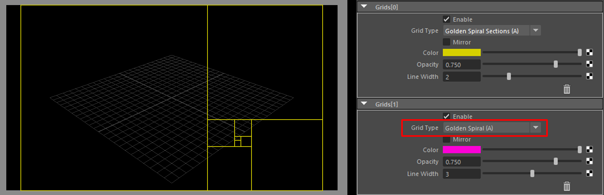
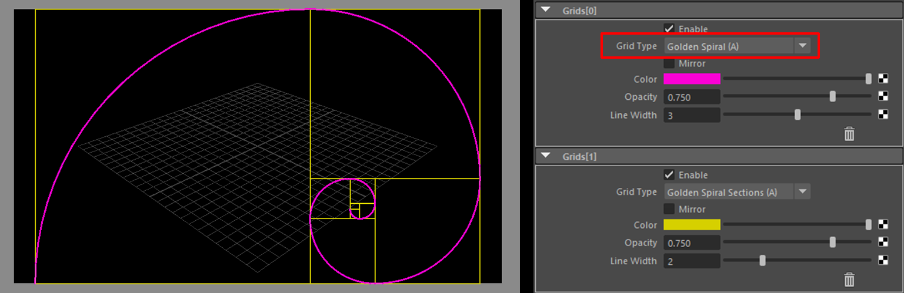

Grid¶
Contents of this page:
Overview¶
Display a grid within the ResolutionGate (or within the letterbox when the letterbox is displayed).
“Phi Grid” and other commonly used grids are available
Multiple grids can be displayed in combination.
{kind=link}
Attributes (Grids[*] in frame)¶
{kind=link}
Mirror¶
Flip the grid.
(Most grids are flipped left to right, but some grids are flipped up or down)
Line Width¶
Grid Width
(Even if textures are connected, Line Width is applied uniformly)
“Trash” icon¶
Remove the grid
Use the
EnableAttribute to temporarily hide it
Precautions (Known Issues)¶
When multiple Grids are set, some of them are not displayed.¶
The following two grids will not be drawn unless specified at the beginning
Golden Spiral(A)Golden Spiral(B)(Mirror)
(
Golden Spiral(A)is set to second, so it will not appear in the view)¶The reason is that the drawing process is different from other Grids.
Please change the order of Grid drawing.
(If
Golden Spiral(A)is specified at the beginning, it will be displayed in the view.)¶